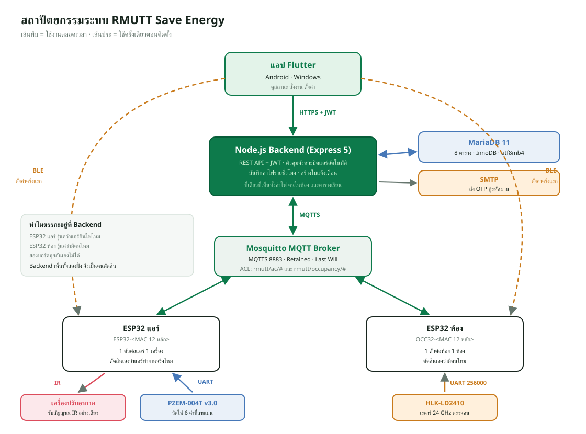

แนวคิดและหลักการคิดของโปรเจค
ภาพรวม#
บทนี้ยังไม่พูดถึงโค้ดเลย แต่ตอบคำถามที่อาจารย์มักถามเป็นข้อแรก: "โปรเจคนี้แก้ปัญหาอะไร และทำไมออกแบบมาแบบนี้" ถ้าตอบบทนี้ได้คล่อง บทที่เหลือจะเป็นแค่รายละเอียดว่า "แต่ละส่วนทำงานยังไง"
วิธีคิดของโปรเจคนี้เรียงเป็นลำดับ ซึ่งควรใช้เป็นโครงตอนเล่าให้อาจารย์ฟังด้วย:
ปัญหาจริง → สิ่งที่ระบบต้องทำได้ (requirement) → ข้อจำกัด (constraint)
→ แบ่งระบบเป็นส่วน ๆ → เลือกเครื่องมือแต่ละส่วน → ทำให้ใช้งานจริงได้ (deploy, ความปลอดภัย, ทดสอบ)
ปัญหาที่โปรเจคนี้แก้#
อาคาร 16 คณะวิศวกรรมศาสตร์ มทร.ธัญบุรี มีห้องเรียนและห้องปฏิบัติการราว 20 กว่าห้อง (ข้อมูลตั้งต้นใน schema.sql สร้างไว้ 22 ห้อง) แต่ละห้องมีเครื่องปรับอากาศ ปัญหาที่เกิดขึ้นจริงมี 3 ข้อ
- แอร์ถูกเปิดทิ้งตอนไม่มีคน คนสุดท้ายออกจากห้องแล้วลืมปิด ไฟฟ้าเสียไปทั้งคืนหรือทั้งวันหยุด
- ไม่รู้ว่าห้องไหนใช้ไฟเท่าไร มีแต่บิลรวมทั้งอาคาร ไม่รู้ว่าควรเริ่มแก้ที่ห้องไหน
- ไม่มีคนเดินตรวจได้ตลอดเวลา อาคารมีหลายชั้น และคนดูแลมีจำกัด
ปัญหาทั้งสามข้อเชื่อมกัน: ถ้าแค่ "ปิดอัตโนมัติ" แต่ไม่ "วัดไฟ" ก็พิสูจน์ไม่ได้ว่าประหยัดจริง ถ้าแค่ "วัดไฟ" แต่สั่งปิดไม่ได้ ก็ได้แค่รู้ว่าเสียไฟ ระบบจึงต้องทำ วัด + รู้ว่ามีคนไหม + สั่งได้ + ดูย้อนหลังได้ พร้อมกัน
สิ่งที่ระบบต้องทำได้ (Requirements)#
| ข้อ | ความต้องการ | ส่วนที่ทำหน้าที่นี้ |
|---|---|---|
| R1 | สั่งเปิด/ปิด/ปรับอุณหภูมิแอร์ได้จากมือถือและเว็บ ทั้งในและนอกมหาวิทยาลัย | แอป Flutter, เว็บแอป, Backend, MQTT, บอร์ด ESP32 (ยิง IR) |
| R2 | วัดพลังงานไฟฟ้าของแอร์ทีละเครื่อง | เซนเซอร์ PZEM-004T บนบอร์ดแอร์ |
| R3 | รู้ว่าในห้องมีคนอยู่หรือไม่ | เรดาร์ HLK-LD2410 บนบอร์ดตรวจจับคน |
| R4 | ปิดแอร์เองเมื่อห้องว่างนานพอ โดยไม่ปิดตอนมีเรียน | บริการ auto-off ใน Backend + ตารางเรียน |
| R5 | เก็บประวัติค่าไฟ ดูเป็นรายชั่วโมง/วัน/เดือน และส่งออก Excel | ตาราง energy_hourly, หน้าพลังงาน, ไฟล์ export |
| R6 | มีผู้ใช้หลายคน แยกสิทธิ์ผู้ดูแล (admin) กับเจ้าหน้าที่ (staff) | ระบบสมาชิก JWT, ตาราง users |
| R7 | ติดตั้งบอร์ดใหม่ได้ง่ายโดยไม่ต้องแก้โค้ด | การตั้งค่าผ่าน Bluetooth (provisioning) |
| R8 | ข้อมูลไม่หายเมื่อเน็ตหลุดหรือไฟดับ | NVS, บันทึกย้อนหลังในบอร์ด (history log), ฐานข้อมูล + สำรองรายวัน |
| R9 | ปลอดภัย: คนนอกสั่งแอร์ไม่ได้ ดักฟังไม่ได้ | HTTPS/MQTTS, บัญชี MQTT รายบอร์ด, rate limit, เปิดพอร์ตให้น้อยที่สุด |
ข้อจำกัดที่บังคับการออกแบบ (Constraints)#
ข้อจำกัดเหล่านี้คือ "เหตุผลจริง" ของหลายการตัดสินใจ ควรจำให้ได้
- เซิร์ฟเวอร์อยู่ในเครือข่ายภายในมหาวิทยาลัย ใช้ IP ส่วนตัว
10.x.x.xและ firewall ไม่ให้อินเทอร์เน็ตต่อเข้ามา → จึงต้องใช้ Tailscale Funnel เป็นทางเข้าจากภายนอก ทั้งของแอป/เว็บ (พอร์ต 443) และของบอร์ด ESP32 (MQTT พอร์ต 8443) และขอใบรับรอง HTTPS แบบ DNS-01 ผ่าน DuckDNS (รายละเอียดในบทเครือข่าย) - แอร์เป็นรุ่นธรรมดา ไม่มี Wi-Fi สั่งได้ทางรีโมตอินฟราเรดอย่างเดียว → จึงต้องมีบอร์ดยิง IR เลียนแบบรีโมต
- งบประมาณจำกัด ต้องติดตั้งหลายสิบห้อง → ใช้ ESP32 ราคาหลักร้อยแทน Raspberry Pi
- ตำแหน่งติดตั้งต่างกัน ตัวยิง IR ต้องเห็นตาแอร์ เซนเซอร์วัดไฟต้องคล้องสายไฟของแอร์ เรดาร์ต้องมองเห็นทั้งห้อง → จึงแยกเป็น 2 บอร์ด (บอร์ดแอร์ 1 ตัวต่อแอร์ 1 เครื่อง, บอร์ดตรวจจับคน 1 ตัวต่อห้อง)
- ผู้ใช้ไม่ใช่โปรแกรมเมอร์ การติดตั้งบอร์ดต้องทำผ่านแอปได้ ไม่ต้องแก้โค้ดหรือเสียบสาย
การแบ่งระบบเป็นส่วน ๆ#

ผู้ใช้ (มือถือ / คอมพิวเตอร์)
│ HTTPS (REST API + JWT)
▼
┌──────────────────────── เซิร์ฟเวอร์ (Docker) ────────────────────────┐
│ Caddy (ประตูหน้า, HTTPS) → Backend Node.js → MariaDB (ฐานข้อมูล) │
│ │ │
│ ▼ MQTT │
│ Mosquitto (Broker) │
└───────────────────────────────────┬───────────────────────────────────┘
│ MQTTS ผ่าน Tailscale Funnel พอร์ต 8443
│ (หรือต่อตรง 8883 ถ้าอยู่ใน Wi-Fi มหาวิทยาลัย)
┌────────────────────┴────────────────────┐
▼ ▼
บอร์ดแอร์ ESP32 บอร์ดตรวจจับคน ESP32
├─ ยิง IR → แอร์ └─ อ่านเรดาร์ LD2410
└─ อ่าน PZEM → วัดไฟ
ระบบมี 6 ส่วนหลัก แต่ละส่วนมีหน้าที่ชัดเจนเพียงอย่างเดียว
| ส่วน | หน้าที่เดียวที่ต้องทำให้ดี | ทำไมแยกออกมา |
|---|---|---|
| แอป Flutter | หน้าจอสำหรับมือถือ/Windows และตั้งค่าบอร์ดผ่าน Bluetooth | มือถือเท่านั้นที่มี Bluetooth ไว้ตั้งค่าบอร์ดตอนติดตั้ง |
| เว็บแอป | หน้าจอสำหรับเบราว์เซอร์ ไม่ต้องติดตั้งอะไร | ผู้ดูแลใช้คอมพิวเตอร์ทำงานจัดการข้อมูลเยอะ ๆ ได้สะดวกกว่า |
| Backend (Node.js) | "สมอง" กลาง: ตรวจสิทธิ์ เก็บข้อมูล ตัดสินใจปิดแอร์ | เป็นที่เดียวที่เห็นข้อมูลทุกฝั่งพร้อมกัน และทำงานตลอดเวลา |
| MariaDB | ความจำถาวร | ข้อมูลมีความสัมพันธ์ชัดเจน ต้องบังคับความถูกต้องด้วย key |
| Mosquitto (MQTT Broker) | ไปรษณีย์ส่งข้อความระหว่าง Backend กับบอร์ด | บอร์ดต้องรับคำสั่งได้ทันทีโดยไม่ต้องถามซ้ำ ๆ |
| ESP32 สองแบบ | แขนขาและประสาทสัมผัส: ยิง IR, วัดไฟ, ตรวจคน | ฮาร์ดแวร์ต้องอยู่หน้างาน |
การตัดสินใจสำคัญและเหตุผล#
นี่คือหัวใจของ "หลักการคิด" ทุกข้อมีรูปแบบ ทางเลือก → เลือกอะไร → เพราะอะไร
1. ตรรกะปิดแอร์อัตโนมัติอยู่ที่ Backend ไม่ใช่ที่แอปหรือบอร์ด#
- ถ้าอยู่ในแอป: ปิดแอปแล้วระบบตาย
- ถ้าอยู่ในบอร์ด: บอร์ดแอร์ไม่รู้ว่ามีคนไหม บอร์ดเรดาร์ไม่รู้ว่าแอร์เปิดอยู่ไหม และไม่มีใครรู้ตารางเรียน
- Backend เห็นครบทั้ง 3 อย่าง (สถานะแอร์ + มีคนไหม + ตารางเรียน) และรันตลอด 24 ชั่วโมง จึงเป็นที่ที่ควรตัดสินใจ
2. ใช้ MQTT คุยกับบอร์ด ไม่ใช้ HTTP#
- ถ้าใช้ HTTP บอร์ดต้องถามเซิร์ฟเวอร์ซ้ำทุกไม่กี่วินาทีว่า "มีคำสั่งไหม" (polling) ช้าและเปลือง
- MQTT เปิดการเชื่อมต่อค้างไว้ เซิร์ฟเวอร์ส่งคำสั่งลงไปได้ทันที
- ได้ความสามารถพิเศษฟรี: retained message (ข้อความล่าสุดค้างไว้ให้คนที่ต่อเข้ามาทีหลัง) และ Last Will (บอร์ดหลุด Broker ประกาศว่าออฟไลน์แทนให้)
3. Bluetooth ใช้ครั้งเดียวตอนติดตั้ง#
- บอร์ดใหม่ยังไม่รู้จัก Wi-Fi จึงยังต่อเน็ตไม่ได้ ช่องทางเดียวที่คุยได้คือ Bluetooth
- แอปส่งชื่อ Wi-Fi, รหัส, ที่อยู่ Broker และบัญชี MQTT ให้บอร์ดทาง BLE บอร์ดเก็บไว้ใน NVS (หน่วยความจำที่ไม่หายเมื่อไฟดับ)
- หลังจากนั้นบอร์ดคุยผ่าน Wi-Fi + MQTT ตลอด เพราะ BLE ไปได้แค่ราว 10 เมตร
4. ระบุตัวบอร์ดด้วย MAC address#
- รหัสบอร์ดเป็น
ESP32-<MAC 12 หลัก>และOCC32-<MAC>มาจากชิปโดยตรง - ไม่ซ้ำกันแน่นอนตั้งแต่โรงงาน จึงไม่ต้องมีคนคอยจดว่าเลขไหนใช้ไปแล้ว
5. เก็บค่าไฟเป็น "ถังรายชั่วโมง"#
- ถ้าเก็บทุกค่าที่บอร์ดส่งมา (ทุก 10 วินาที × หลายสิบเครื่อง) ข้อมูลจะเพิ่มหลายแสนแถวต่อวัน
- ระบบเก็บ ผลต่าง ของมิเตอร์สะสมรวมลงถัง 1 แถวต่อเครื่องต่อชั่วโมง (
energy_hourly) ได้ข้อมูลเล็ก สรุปเร็ว และยังละเอียดพอสำหรับรายงาน
6. ฐานข้อมูลเชิงสัมพันธ์ (MariaDB) ไม่ใช่ NoSQL#
- กติกา "แอร์ต้องอยู่ในห้องที่มีจริง" หรือ "ห้องหนึ่งมีเซนเซอร์ได้ตัวเดียว" เขียนเป็น
FOREIGN KEY/UNIQUEได้ตรง ๆ - ฐานข้อมูลปฏิเสธข้อมูลผิดให้เอง แม้โค้ดจะพลาด
7. Flutter ตัวเดียวได้ทั้ง Android และ Windows + เว็บแอปแยก#
- Flutter: โค้ดชุดเดียว และใช้ Bluetooth ได้ทั้งสองแพลตฟอร์ม (
flutter_blue_plus) - เว็บแอปเขียนด้วย HTML/CSS/JavaScript ล้วน ไม่ใช้ framework จึงโหลดเร็ว ไม่ต้อง build ไม่ต้องติดตั้ง ใช้จากคอมพิวเตอร์เครื่องไหนก็ได้
8. Deploy ด้วย Docker + Caddy + Tailscale#
- Docker: ทุกส่วนรันในกล่องของตัวเอง ติดตั้งเหมือนกันทุกครั้ง ย้ายเครื่องง่าย
- Caddy: ประตูหน้าเดียว จัดการ HTTPS ให้อัตโนมัติ ส่ง
/apiไป Backend ส่วนที่เหลือเสิร์ฟเว็บ - Tailscale Funnel: เปิดให้มือถือนอกมหาวิทยาลัยเข้าถึงเว็บและ API ได้ โดยไม่ต้องขอเปิดพอร์ตขาเข้าบน firewall เพราะกล่อง tailscale เป็นฝ่าย "ต่อออก" ไปหาเซิร์ฟเวอร์ของ Tailscale เอง เปิดออกไป 2 จุด คือ Caddy (เว็บ + API ที่พอร์ต 443) และ Mosquitto (MQTT ของบอร์ดที่พอร์ต 8443 ซึ่งบังคับ TLS และรหัสผ่านรายบอร์ด) ส่วนฐานข้อมูลและ SSH ไม่ถูกเปิด บอร์ดจึงติดตั้งที่ไหนก็ได้ที่มีอินเทอร์เน็ต ไม่จำเป็นต้องอยู่ใน Wi-Fi ของมหาวิทยาลัย
ถาม: ทำไมไม่ให้แอปคุยกับบอร์ดตรง ๆ ไปเลย ง่ายกว่าไหม?
ตอบ: ง่ายกว่าตอนทดลองครับ แต่ใช้จริงไม่ได้ 3 ข้อ: (1) ใช้นอกอาคารไม่ได้เพราะ BLE ไปได้ไม่ไกล และบอร์ดอยู่ในเครือข่ายภายใน (2) การปิดอัตโนมัติจะทำงานเฉพาะตอนเปิดแอป (3) ไม่มีที่เก็บประวัติรวม เปลี่ยนมือถือข้อมูลก็หาย จึงต้องมี Backend อยู่ตรงกลาง
หลักการออกแบบซอฟต์แวร์ที่ใช้ทั้งโปรเจค#
| หลักการ | ความหมาย | ตัวอย่างในโปรเจค |
|---|---|---|
| Separation of concerns | แต่ละส่วนรับผิดชอบเรื่องเดียว | แอป/เว็บ = หน้าจอ, Backend = ตรรกะ, บอร์ด = ฮาร์ดแวร์ |
| Single source of truth | ข้อมูลจริงมีที่เดียว | สถานะทุกอย่างอยู่ใน MariaDB ผ่าน Backend ส่วนแอปกับเว็บแค่ดึงมาแสดง |
| Pure function แยกจาก side effect | ตรรกะยาก ๆ เขียนเป็นฟังก์ชันที่รับค่าเข้า-คืนค่าออก ไม่แตะ DB/เครือข่าย | backend/src/utils/auto-off.js ตัดสินใจปิดแอร์ ทดสอบได้โดยไม่ต้องมี DB |
| Fail-safe | เมื่อข้อมูลไม่แน่นอน ให้เลือกทางที่ไม่ทำความเสียหาย | ถ้าเรดาร์ไม่พร้อมหรือ PZEM อ่านไม่ได้ จะ ไม่ ปิดแอร์ |
| Defense in depth | ป้องกันหลายชั้น | HTTPS + JWT + ตรวจสิทธิ์ทุกคำขอ + rate limit + บัญชี MQTT รายบอร์ด |
| Least privilege | ให้สิทธิ์น้อยที่สุดเท่าที่จำเป็น | บอร์ดเห็นเฉพาะ topic ของตัวเอง, Backend ไม่ใช้ root ของ DB |
| Idempotency | ทำซ้ำแล้วผลเหมือนเดิม | ส่งข้อมูลย้อนหลังซ้ำไม่ทำให้ค่าไฟนับซ้ำ, สคริปต์ migration รันซ้ำได้ |
| Automation | งานที่ทำซ้ำต้องเป็นสคริปต์ | update-server.ps1, init-env.sh, run_all.ps1 |
เล่าโปรเจคให้อาจารย์ฟังใน 2 นาที#
ใช้โครงนี้ได้เลย (ปรับคำพูดตามสไตล์ตัวเอง):
- ปัญหา: "อาคาร 16 มีแอร์หลายสิบเครื่อง ถูกเปิดทิ้งตอนไม่มีคนบ่อย และไม่มีใครรู้ว่าห้องไหนกินไฟเท่าไร"
- แนวคิด: "เลยทำระบบที่ วัดไฟรายเครื่อง รู้ว่ามีคนไหม สั่งแอร์ได้จากมือถือ และปิดเองเมื่อห้องว่าง"
- ฮาร์ดแวร์: "ใช้ ESP32 สองแบบ ตัวหนึ่งยิง IR สั่งแอร์และวัดไฟด้วย PZEM อีกตัวใช้เรดาร์ LD2410 ตรวจว่ามีคน"
- ซอฟต์แวร์: "บอร์ดคุยกับเซิร์ฟเวอร์ด้วย MQTT เซิร์ฟเวอร์เป็น Node.js เก็บข้อมูลใน MariaDB ผู้ใช้ใช้ผ่านแอป Flutter หรือเว็บ"
- จุดเด่น: "ตรรกะปิดอัตโนมัติอยู่ที่เซิร์ฟเวอร์ ดูตารางเรียนประกอบ ถ้าไม่แน่ใจจะไม่ปิด ตั้งค่าบอร์ดใหม่ผ่าน Bluetooth ได้ในแอป และเก็บค่าไฟย้อนหลังได้แม้เน็ตหลุด"
- การใช้งานจริง: "รันบนเซิร์ฟเวอร์มหาวิทยาลัยด้วย Docker ใช้ Tailscale Funnel ให้เข้าจากข้างนอกได้โดยไม่ต้องเปิดพอร์ต firewall"
คำถามที่อาจารย์อาจถาม#
ถาม: ถ้าเซิร์ฟเวอร์ล่ม แอร์ยังใช้ได้ไหม?
ตอบ: ใช้ได้ครับ รีโมตเดิมยังกดได้ตามปกติ เพราะบอร์ดแค่ยิง IR เพิ่ม ไม่ได้ตัดไฟแอร์ สิ่งที่หายไปชั่วคราวคือการสั่งจากแอปและการปิดอัตโนมัติ ส่วนข้อมูลค่าไฟบอร์ดแอร์เก็บไว้ในตัวเองได้ประมาณ 7 วัน แล้วส่งย้อนหลังเมื่อต่อได้
ถาม: จะรู้ได้ยังไงว่าแอร์ปิดจริงหลังยิง IR?
ตอบ: ดูจากกำลังไฟที่ PZEM วัดได้ครับ ถ้ากำลังไฟลดลงต่ำกว่าเกณฑ์ติดกันหลายครั้ง แปลว่าแอร์หยุดจริง ถ้ายังไม่ลด ระบบจะยิงซ้ำทุก 20 วินาที สูงสุด 5 ครั้ง แล้วสร้างการแจ้งเตือนถ้ายังไม่สำเร็จ
ถาม: ทำไมต้องมีบอร์ด 2 ตัว รวมเป็นตัวเดียวไม่ได้เหรอ?
ตอบ: ตำแหน่งติดตั้งต่างกันครับ ตัวยิง IR ต้องเห็นตาแอร์ PZEM ต้องคล้องสายไฟของแอร์ ส่วนเรดาร์ต้องมองเห็นทั้งห้อง และห้องที่มีแอร์ 2 เครื่องต้องมีบอร์ดแอร์ 2 ตัวแต่ใช้เรดาร์ตัวเดียว
ถาม: ปิดแอร์ตอนนักศึกษายังนั่งเรียนอยู่ได้ไหม?
ตอบ: ออกแบบมากันไว้หลายชั้นครับ ในคาบเรียนต้องห้องว่างนาน 900 วินาที (15 นาที) นอกคาบ 300 วินาที (5 นาที) และถ้าเรดาร์ออฟไลน์หรืออ่านไม่ได้ ระบบจะไม่ปิด นอกจากนี้เปิด/ปิดฟีเจอร์ได้รายเครื่อง ตอนเริ่มใช้แนะนำให้นำร่องแค่ 2–3 ห้องก่อน
สรุปและเช็กลิสต์ความเข้าใจ#
- บอกปัญหา 3 ข้อของอาคารได้
- บอก requirement หลักได้อย่างน้อย 6 ข้อ และรู้ว่าส่วนไหนรับผิดชอบ
- อธิบายได้ว่าทำไมตรรกะปิดแอร์อยู่ที่ Backend
- อธิบายได้ว่าทำไมใช้ MQTT กับบอร์ด แต่ใช้ HTTP กับแอป/เว็บ
- อธิบายได้ว่า Bluetooth ใช้ตอนไหน และทำไมใช้แค่ครั้งเดียว
- อธิบายได้ว่าทำไมต้องใช้ Tailscale (เซิร์ฟเวอร์อยู่หลัง firewall มหาวิทยาลัย)
- เล่าโปรเจคครบใน 2 นาทีโดยไม่ต้องดูโน้ต